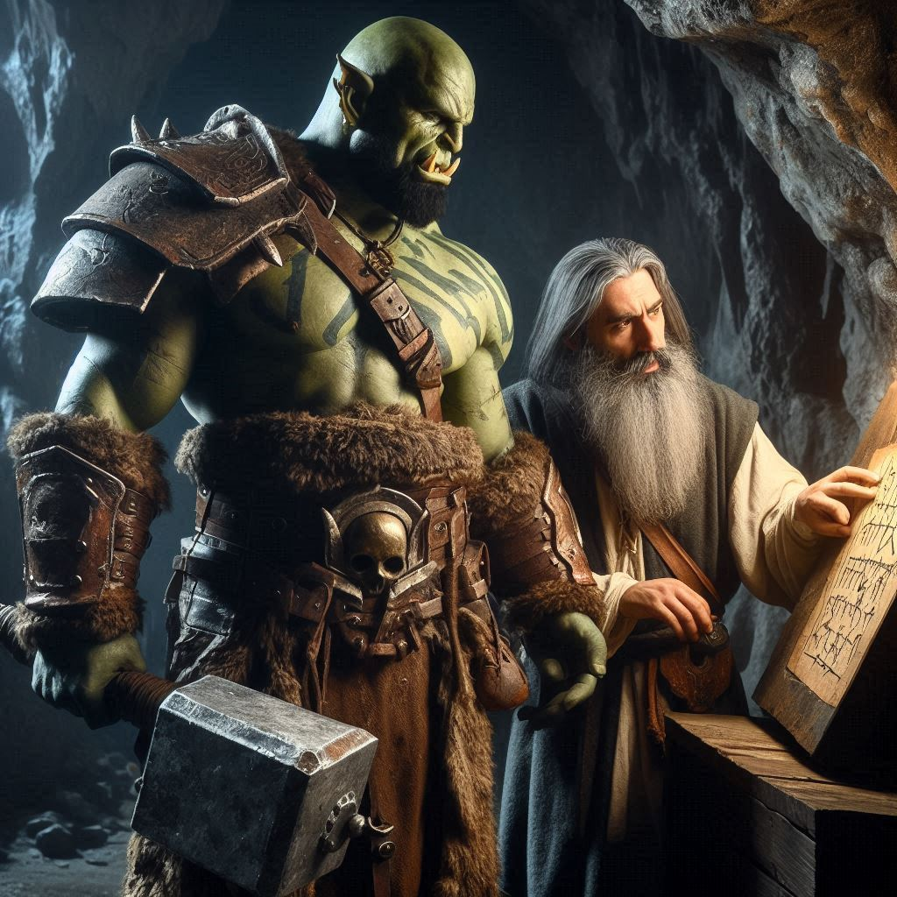
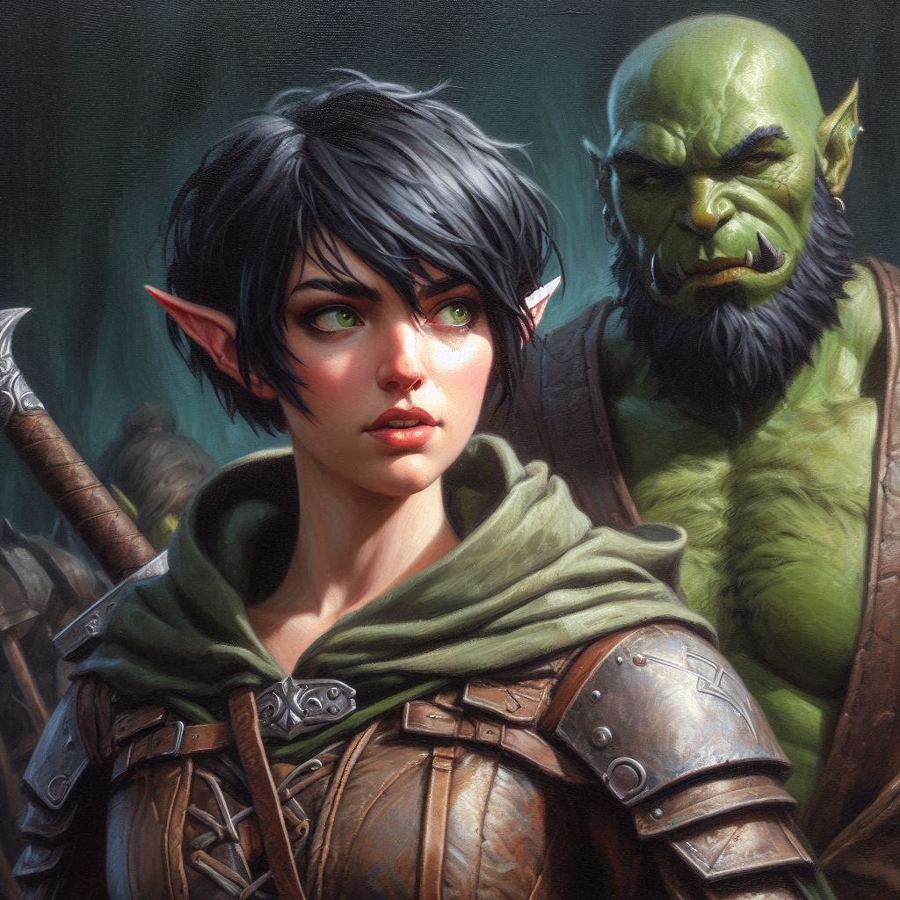

Secrets from the Past
You press forward through the dense woods, the chill of the evening settling into your bones. Hemlock Caverns is not far now. The dark magic that lingers in the air grows stronger with every step, pulling you toward your destination—and to Jorsh. The memory of your dreamlike encounter with him lingers in your mind. His plea for you to join him was too sincere, too convincing, to simply dismiss. You tell yourself you’ll stop him, but a small voice inside wonders if Jorsh is right. Maybe this power needs controlling, not destroying.
You’ve almost reached the caverns when a rustling sound in the trees draws your attention. You freeze, your hand instinctively going to the hilt of your blade. The sound grows louder, closer, until a large, green-skinned figure emerges from the shadows.
“Baider?” you gasp, surprised.
Your adoptive father stands before you, his massive frame easily recognizable even in the dim light. His thick arms are crossed over his chest, and his normally calm face is set in a grim expression. He’s never followed you before, always trusting your decisions, but now, something’s changed.
“I knew you wouldn’t listen,” he says, his deep voice tinged with a mix of frustration and concern. “You were always too stubborn, Kira. But this… this is bigger than you know.”
You take a step back, heart racing. “How did you find me? What are you doing here?”
Baider steps forward, his eyes searching yours. “Rangers aren’t the only ones who can track someone. I’m here to help you, whether you like it or not. Hemlock Caverns... they’re more dangerous than you realize. There’s magic in there, ancient magic. Magic that no one should have control over—not Jorsh, not the Minister of Trade, and not you.”
You blink in shock. Baider’s words sink in, but you can’t shake the feeling that there’s more he’s not telling you. “How do you know so much about the caverns? About Jorsh?”
He hesitates, a pained look crossing his face. “There’s a lot I haven’t told you, Kira. Secrets I’ve kept to protect you, things I swore I’d never share. But now... I can’t let you face this alone.”
Your mind races. This is the first time Baider has ever mentioned knowing anything about the dark forces that threaten your world. Could it be that he’s known about Hemlock Caverns all along? And if so, what else is he hiding?
“I don’t need your help,” you snap, trying to hold on to the independence you’ve fought so hard for. “I’m strong enough to finish this on my own.”
Baider shakes his head. “No one thinks that you’re weak, Kira. But strength isn’t about doing everything alone. It’s about knowing when to trust the people who care about you.”
You hesitate, torn between the fierce independence that drives you and the vulnerability that creeps in. There’s no denying the weight of what’s ahead. Hemlock Caverns is filled with danger, and Jorsh’s power is growing. But to accept Baider’s help... It feels like admitting that you can’t do it alone.
Before you can respond, Baider reaches into his pack and pulls out a small, weathered map. “I’ve been there before,” he says softly. “Years ago, with Onyx. We were young and foolish, looking for power we didn’t understand. We barely made it out alive.”
You stare at the map, your heart sinking. So Onyx and Baider knew about the caverns all along? And they never told you? Anger flares inside you, but it’s quickly overtaken by a deeper feeling—a strange, heavy sadness. Your whole life, you’ve been seeking approval, trying to prove yourself worthy. But now, the people you trusted most have been hiding secrets.
“I should’ve told you sooner,” Baider continues, his voice filled with regret. “But I thought keeping you away from all this was the best way to protect you.”
You clench your fists, grappling with the whirlwind of emotions inside you. There’s a part of you that wants to walk away, to leave Baider behind and face the caverns alone. But another part—the part that’s tired of pushing people away—knows that maybe, just maybe, accepting help doesn’t make you weak.
“What else haven’t you told me?” you ask, your voice quieter now.
Baider sighs, the weight of years of secrets finally coming to the surface. “Your mother... she wasn’t just anyone. She came from a long line of mages, powerful ones who had ties to Hemlock Caverns. That’s likely why Jorsh targeted you. He knows who you are—what you are. He thinks you can help him harness the magic inside the caverns.”
His words hit you like a punch to the gut. All this time, you thought your connection to Jorsh was personal—old friends torn apart by different paths. But it’s more than that. You’re tied to this, to the magic, to the darkness within Hemlock Caverns. And now, the choice feels even heavier. Will you use that power to stop Jorsh, or will you join him in controlling it?
Baider places a hand on your shoulder, his voice softening. “You don’t have to make this decision alone, Kira. Let me help you.”
“Onyx is in trouble,” you say, hoping to distract Baider. “I found his cottage ransacked. He was nowhere to be found.”
“I know,” Baider says. “I… I tried to pay him a visit before coming after you.”
You look up at him, your thoughts swirling. The path to the caverns lies ahead, and with it, the fate of the world. But now, you also hold the key to your past—the knowledge of who you truly are and the power you could wield.
You shove your hand into the pouch at your side and your fingers find the rune stone that you found in Onyx’s cottage. It hums with magic under your fingertips.
Choices flash before your mind: